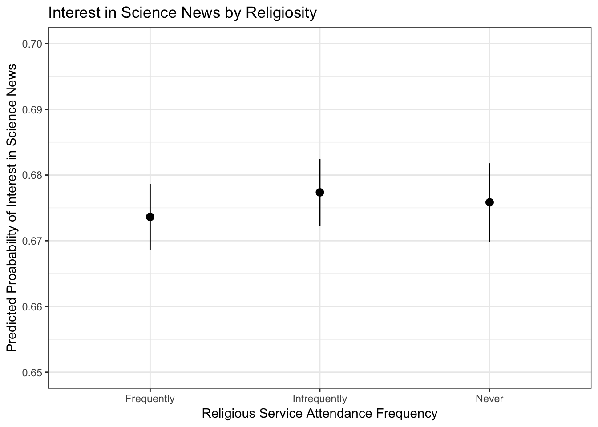
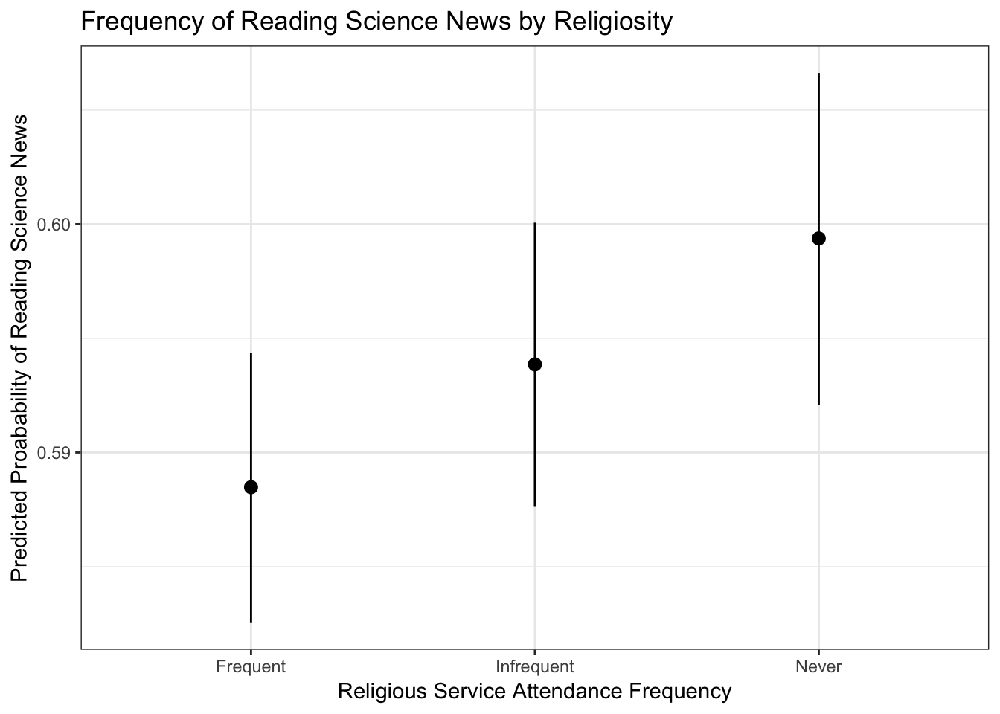
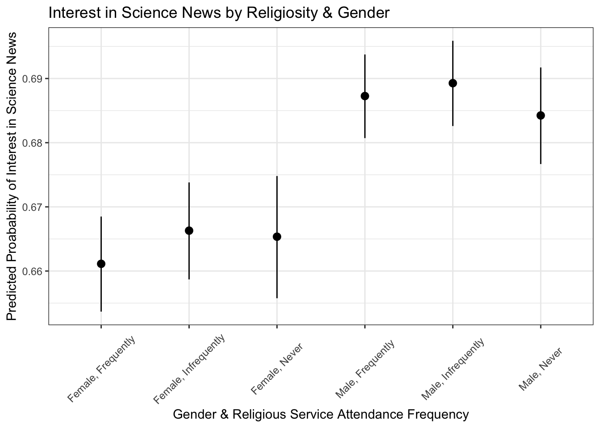
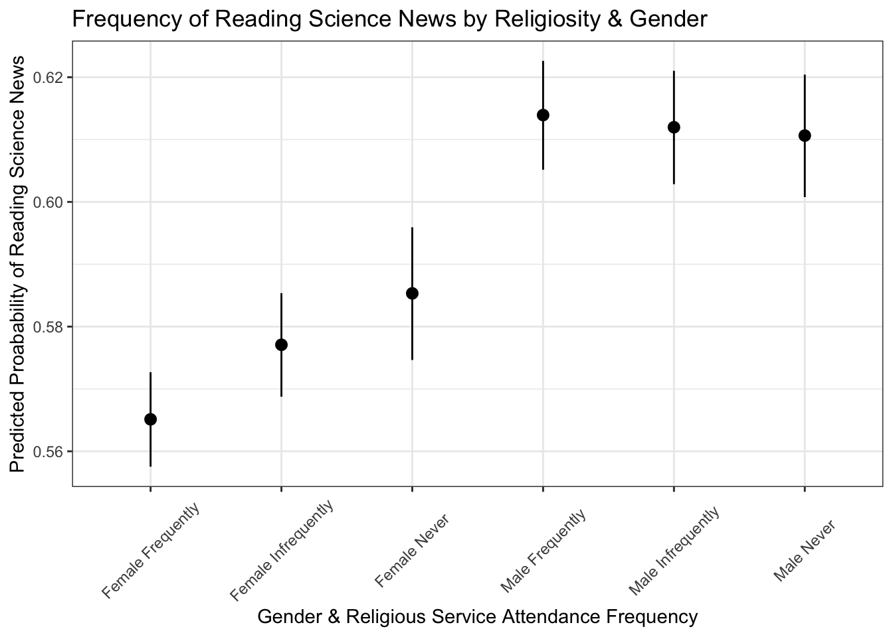
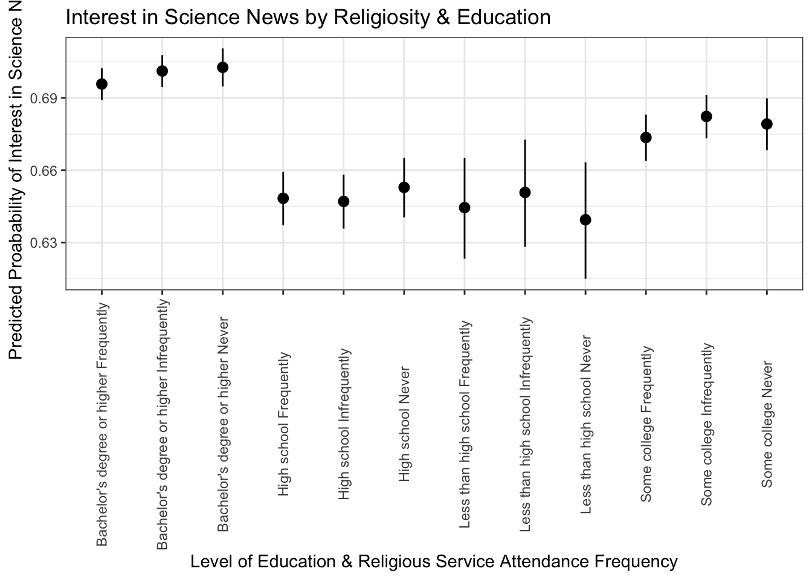
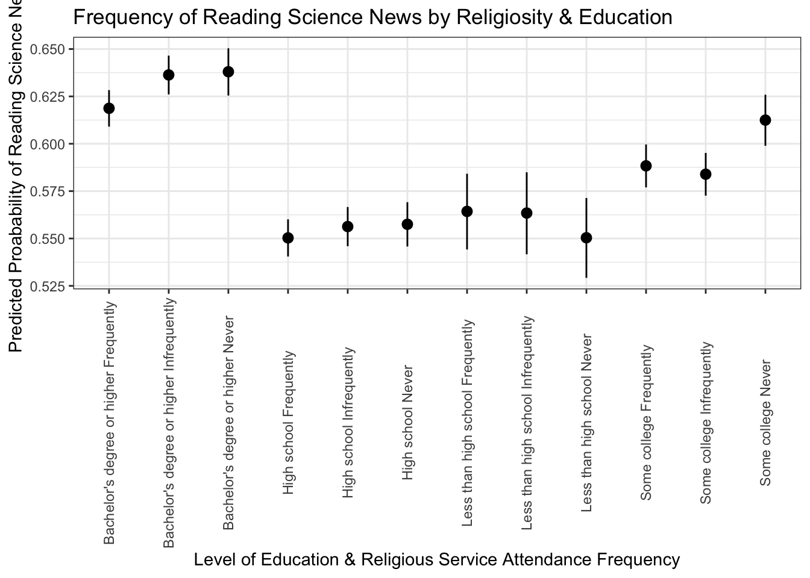
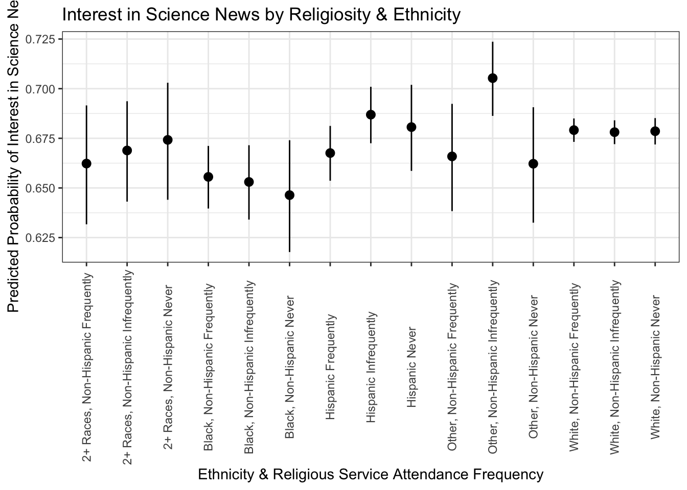
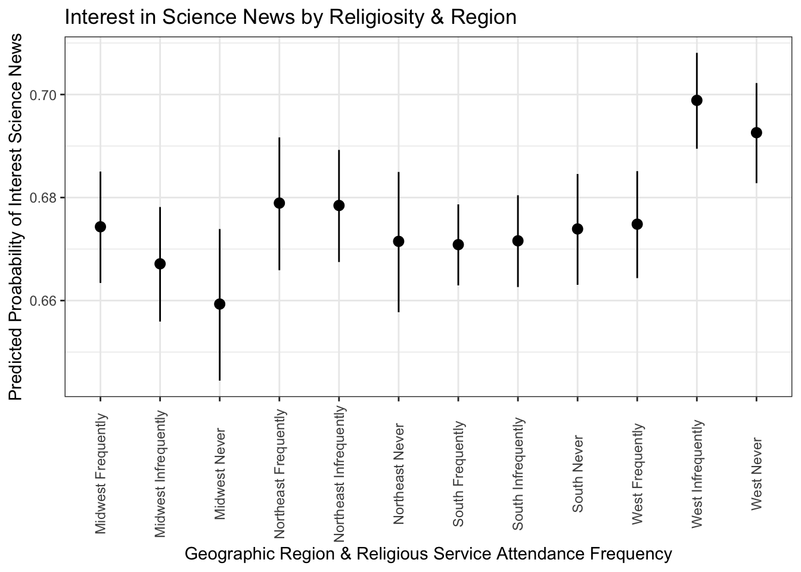
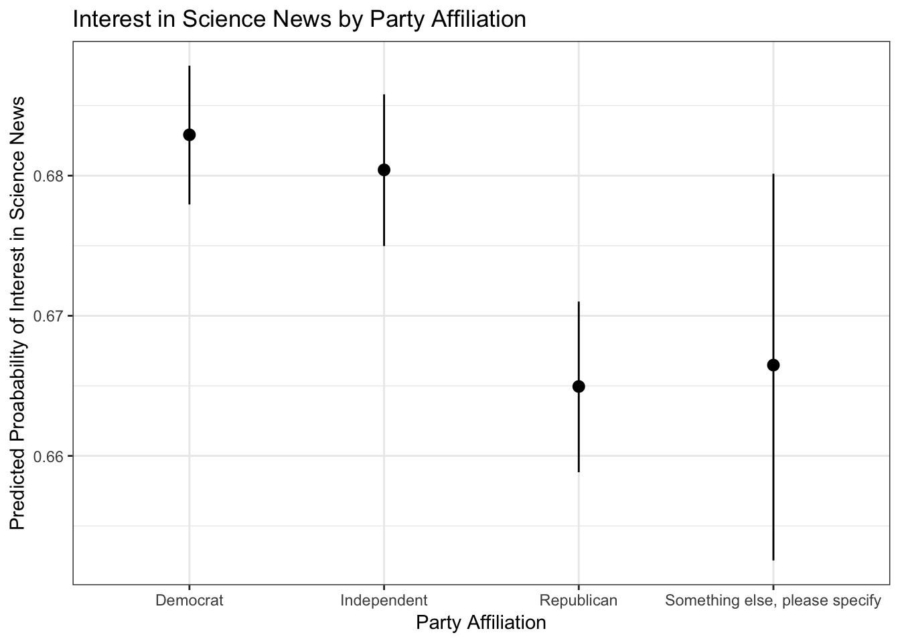

American Science News Analysis: Religiosity, Party Affiliation, and Social Media
Lama Ahmad
12/3/2018
Background Information
There are various issues that relate to science and technology in the political sphere today. We see many political actors on various sides of science related issues. For example, one of the most contentious issues today is climate change. Other issues that are visible include the use of natural gas, vaccinations, the ethics of genetic modification, and technology and data privacy.
To have an informed opinion about these issues it is important to read well-written and reliable content about scientific advancements and issues. Social media has certainly changed the way we consume news (including science news). While on one hand social media could be making conttent more accessible to a broader audience, it is also more difficult to discern what is reliable content vs what is propaganda.
The survey data used is from the 2017 Pew Research Center survey of U.S. adults about science news and information. The survey had a sample size of 4,024 adults, 18 years of age or older, living in all 50 U.S. states and the District of Columbia. Retrieved from: http://www.journalism.org/dataset/2017-pew-research-center-science-and-news-survey/
Hypotheses
Politicized identities including racial identities, political party affiliation and ideology, and religious groups are hypothesized to engage with social media and science concepts in different ways. I am interested in how these hypotheses intersect, and in this paper I will test the following ideas:
Hypothesis 1: As frequency of religious service attendance increases, interest in science news decreases and frequency of reading science news decreases
Hypothesis 2: There are differences across political party affiliation in terms of interest in science news and frequency of reading science news
Hypothesis 3: There are differences among different groups of people who engage with science news on social media
HYPOTHESIS 1: Religiosity and Science News
Oveall, there is not a significant relationship between religiosity (measured by frequency of attending religious services) and interest in science news. For the purposes of this analysis, I recoded the interest likert scale to interested / not interested as a binary variable in order to use a logistic regression to calculate the probability of being interested in science news based on frequency of attending religious services. On average, people who frequently, infrequently, and never attend to religious services have a 68% probability of being interested in science news.

In terms of probability of reading science news, I recoded the survey question to categorize people who frequently read science news (a few time or multiple times a week), as frequent readers (1), and others who answered a few times a month or less as infrequent readers (0). In this case, people who frequently or infrequently attend religious services have a 59% probability on avereage of reading science news. People who never attend religious services have a 60% probability on average of reading science news. However, what is interesting is looking at the confidence intervals of the frequent vs infrequent religious service attendees - frequent attendees can go as low as 58% probability of reading science news and infrequent attendees can go as high as a 60% probability of reading science news.

I looked at whether frequency of religious attendance and the probability of reading science news depended on gender. While the results again showed that there is not a significant relationship between frequency of religious attendance and probability of reporting interest in science news, it is notable that women had a lower probability than men of being interested in science news across the board. On average, women have a 2% lower probability than men of being interested in science news.

Women experience the greatest variation in likelihood of reading science news compared to Men. Women who infrequently attend religious services have a 57% probability of reading science news, women who frequently attend religious services have a 58% probability of reading science news, and women who never attend religious services have a 60% probability of reading science news. By contrast, men have an avereage of 61% probability of reading science news across the board.

People who have a bachelor’s degree or higher have the highest probability of being interested in science news at about 70% on average regardless of frequency of religious service attendance.
People who have some college education have a 67% average probability of being interested in science news if they infrequently attend religious services, and a 68% average probability of being interested in science news if they frequently or never attend religious services.
People who have a high school education have a 65% average probability of being interested in science news across all frequencies of attending religious services.
People who have less than a high school education that have never or frequently attend religious services have a 64% average probability of being interested in science news, and people who infrequently attend religious services have a 65% average probability of being interested in science news.

People who have a bachelor’s degree or higher have the highest probability of being frequent readers of science news at about 62% if they frequently attend religious services, and 64% if they infrequently or never attend religious services.
People who have some college education have a 60% average probability of being frequent readers of science news if they frequently or infrequently attend religious services, and a 63% average probability of being frequent readers of science news if they never attend religious services.
People who have a high school education have a 56% average probability of being frequent readers of science news if they attend religious services frequently, and a 57% average probability of being frequent readers of science news if they attend religious services infrequently or never.
People who have less than a high school education that infrequently or frequently attend religious services have a 58% average probability of being frequent readers of science news, and a 57% average probability of being frequent readers of science news if they never attend religious services.

Although the differences are not statistically significant, there are some interesting patterns that emerge when we look at frequency of religious service attendance and interest in science news by ethnicity.
The least change happens across White people. They are 68% likely to be interested in science news across all frequencies.
Black people who frequently attend religious services are 66% likely to be interested in science news, Black people who infrequently attend religious services are 68% likely to be interested in science news, and black people who never attend religious services are 65% likely to be interested in science news.
People who are categorized as other are 67% likely to be interested in science news if they frequently attend religious services, 71% likely to be interested in science news if they infrequently attend religious services, and 66% likely to be interested in science news if they never attend religious services.
People who are Hispanic are 67% likely to be interested in science news if they frequently attend religious services, 69% likely to be interested in science news if they infrequently attend religious services, and 68% likely to be interested in science news if they never attend religious services.
For people who are 2+ Races and frequently attend religious services, they are 66% on average likely to be interested in science news, infrequently and never 67% on average likely to be interested in science news

Breaking up the data by region (Northeast, Midwest, South, and West) also yields some interesting results.
People in the West who infrequently and never attend religous services have the highest probability of being interested in science news. People in the West who infrequently and never attend religious services have a 71% or 70% probability on average of being interested in science news.
People in the South do not experience much change in probability of being interested in science news whether they frequently, infrequently, or never attend religious services. They all have a 68% probability on average of being interested in science news.
People in the Midwest who frequently and infrequently attend religious services have a 67% probability on average of being interested in science news. Interestingly, people in the Midwest who never attend religious services have a 66% probability on average of being interested in science news.
There is a similar trend in the Northeast, where people who frequently and infrequently attend religious services have a 68% probability on average of being interested in science news. Peole in the Northeast who never attend religious services have a 67% probability on average of being interested in science news.

HYOPTHESIS 2: Interest in Science News by Party Affiliation
Democrats and Independents had an average of 68% probability of being interested in science news. Republicans had an average of 66% probability of being interested in science news. People who indicated their party affiliation as ‘Something Else’ had an avereage of 67% probability of being interested in science news.

Democrats and Independents had an average of 60% probability of being frequent readers of science news. Republicans had an average of 58% probability of being frequent readers of science news. People who indicated their party affiliation as ‘Something Else’ had an avereage 67% probability of being frequent readers of science news.